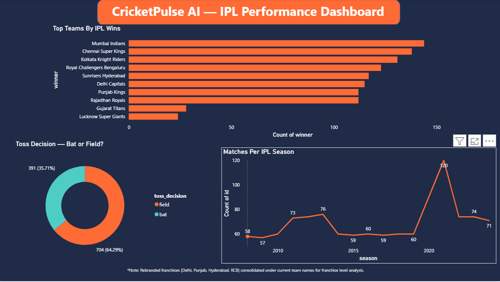
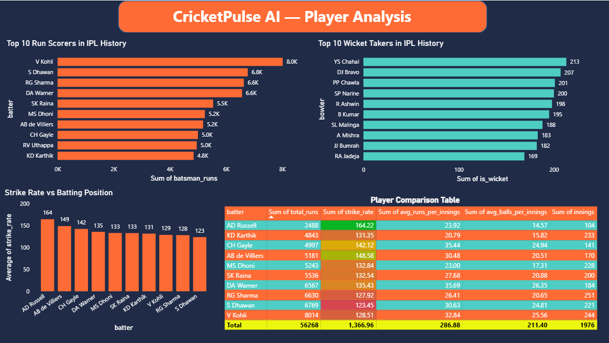
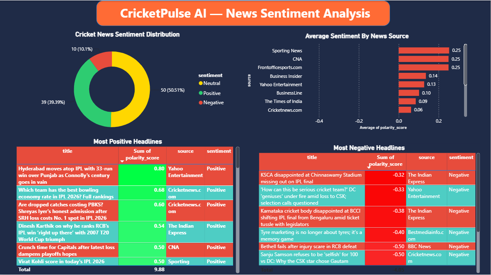
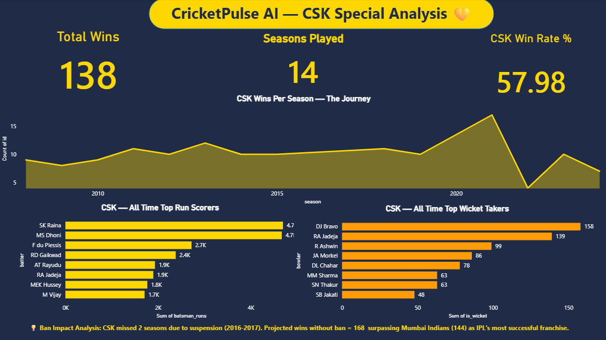
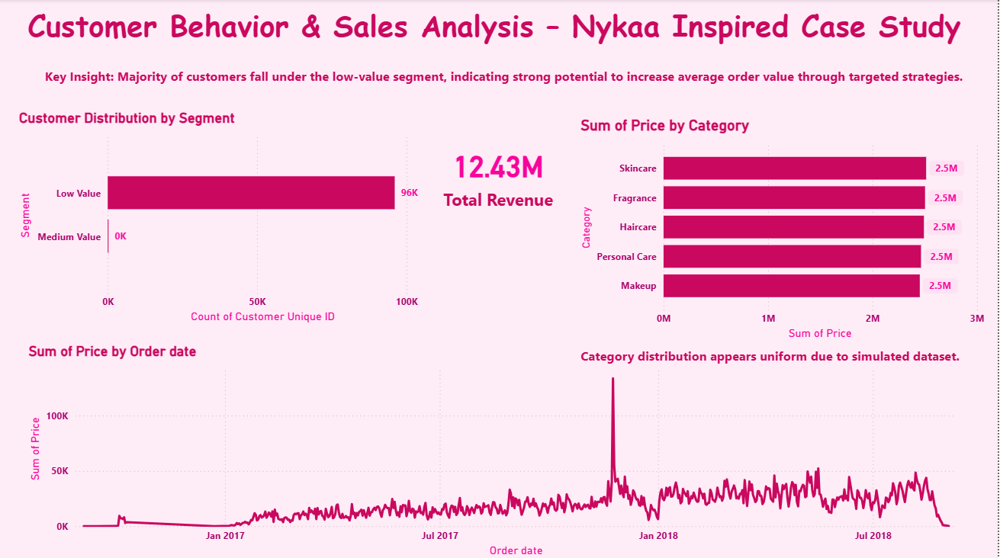
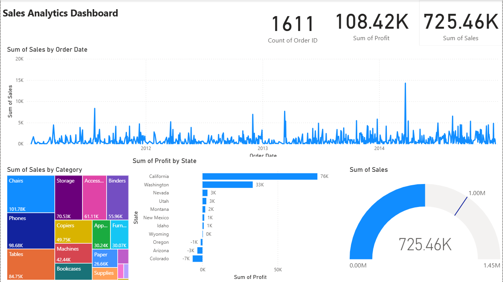
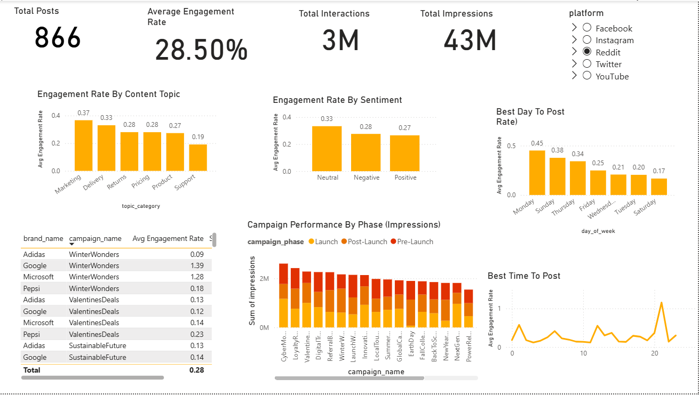

Working across SQL, Python, and Power BI — turning raw numbers into decisions people can actually act on. Open to full-time roles and freelance projects.
I'm a B.Sc. IT graduate (2024) who got hooked on the moment a messy spreadsheet turns into a chart someone can actually make a decision from. That pull took me from a Business Development role at an IIT Bombay-incubated startup into hands-on analyst work — building dashboards, writing BRDs, and shipping full analysis projects end to end, not just the pretty chart at the end.
I treat every project like a stakeholder is going to read it — which is why my portfolio isn't just notebooks, it's proposals, documentation, and dashboards built the way a real business would expect to receive them. Also yes, one of my projects is a cricket analytics tool built as a love letter to IPL — professional doesn't have to mean boring.
Mumbai — open to relocating to Pune, Bangalore, Hyderabad
Turning raw exports into a report your team actually opens every week — clean visuals, clear KPIs, built to your business logic.
Cleaning messy datasets, running the analysis, and handing back findings in plain language — not just a script and a "good luck."
Business requirement documents and process write-ups that a developer, stakeholder, or new hire can actually follow.
A specific question about your sales, ops, or customer data that needs a clear, well-reasoned answer — fast.




IPL franchises make decisions on gut feel and box-score stats alone — media narrative and sentiment are rarely part of the picture.
Combined multi-season IPL performance data with real-time news sentiment (NewsAPI + TextBlob), framed as a proposal to BCCI.
Python, pandas, matplotlib, seaborn, TextBlob, NewsAPI — built across 4 Jupyter notebooks.
4-page Power BI dashboard, 14-section BRD, LinkedIn carousel, full documentation.

Understanding sales performance patterns for a fast-growing e-commerce beauty brand.
End-to-end sales data analysis, backed by a full business requirement document scoping the problem and findings.
SQL, Excel, Python.
Full BRD, structured analysis, GitHub documentation.

Retail sales & profit breakdown by category, state, and time — built to flag where margin is being lost.
github.com/Shrutikpandey →
Engagement analysis across platforms and campaign phases — surfacing the best day and time to post.
github.com/Shrutikpandey →New case studies get added here as freelance and personal projects wrap up.
Get in touch →Building end-to-end analysis projects (CricketPulse AI, Nykaa Sales Analysis) and taking on freelance BA work — dashboards, BRDs, and data cleanup — while pursuing full-time BA/DA roles.
Startup incubated at IIT Bombay. Worked on business development, laying the groundwork for the stakeholder-first thinking that now shapes how I approach analysis.
Graduated with an 8.65 CGPA. Built the technical foundation — SQL, Python, and data structures — that now underpins every analysis project.
Looking for a full-time Business Analyst / Data Analyst, or need a freelance dashboard, BRD, or data deep-dive done properly? I'd like to hear about it.
email shrutipaandey@gmail.com